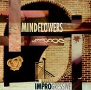

| Artist: | Mindflowers |
| Title: | Improgressive |
| Label: | Periferic Records BGCD 110 |
| Length(s): | 66 minutes |
| Year(s) of release: | 2002 |
| Month of review: | [06/2003] |
| 1) | Red Spider | 8.18 |
| 2) | Falling | 5.46 |
| 3) | Sick Spirit | 4.50 |
| 4) | Why? | 1.52 |
| 5) | Why Not? | 5.07 |
| 6) | Crying Skies | 7.01 |
| 7) | Knowing The Path | 7.01 |
| 8) | Flo's Kisses | 4.28 |
| 9) | Talk With Myself | 22.37 |
With Falling we have come to a more melodic track, slower and more thoughful. Ramblings on acoustic guitars in the back and a guitar soloing away, while the rhythm section plays freshly in the back. The drums are plainly audible in the mix here, and are played in varied fashion. Time for a low bass solo then after which the songs poignant takes it up again. Notwithstanding the jazzrock feel, the music can be quite heavy on these tracks giving evidence of a progmetal influence, albeit not a large one. The progmetal is stronger apparent in the opening of Sick Spirit. Again, the melodic side of it all is not neglected with this time the keyboards taking the lead. In this way the lead alternates between guitar and keyboards, with the guitar playing rhythm to support the keyboards. The bio also mentions King Crimson as an influence, but up to now I cannot say I have heard anything of the kind. I can imagine, with the music they are ploaying, that they are likely to listen to that band themselves.
Why? is a short track, with fast acoustic strumming and consistently subdued. Why Not? seems a continuation opening with some fresh keyboard playing, after which the band rocks away in progmetal fashion. Again, the thematic approach shows itself with the band playing memorable tunes repetitively. At times, I hear some Frippian influences in the guitar work, but the keyboards are too evident to make it really sound like that band. After that its meandering time, but with some nice pianic parts thrown in.
With Crying Skies the Discipline era King Crimson is very much in evidence. The music is almost minimal here, the guitar work at least. Alongisde, the Chapman Stick plays in wailing fashion. Then the beat sets in, and a friendly melody develops. At the end the music becomes quite emotional, but in an understated fashion.
Knowing The Path opens with Your First Sony sounds. This more an in your face repetitive rock track, more on power than on melody. Oh but wait, here comes the melody, but it is a rather trite one, something likely to be composed for an American televsion series. The piano playing however is quite nice again, and a bit later the guitar does it gets revenge. But it is not all grand, not here. The meandering guitar wanders a bit too much.
Flo's Kisses is a gypsy like violin piece with some keyboards and acoustic guitar thrown in for good measure. The main part of the album is Talk With Myself. It opens soothingly enough. It turns out to be lush tour-de-force of epic proportions. Plenty of variation, good melodies with some flamenco and pure and lounge jazz thrown in even. Everywhere between subdued cosmic keyboards and rocking out guitar and organ, the band find may find itself here. The latter part of the song is definitely lower key than the earlier two thirds.